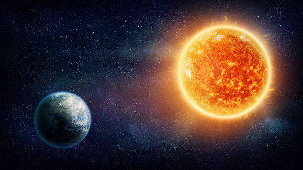

My lab 1
Welcome to this project page
Map Example
Click on the Earth or the Sun

This section provides additional details about the project. Short notes and supporting information to help the reader understand the content better.
Here you can find some extended explanations. Some background context, references, or clarifications that are not part of the main content but can still be useful.
Scienta vinces
This is a footer area. It contains closing information or a reminder about the purpose of the work.